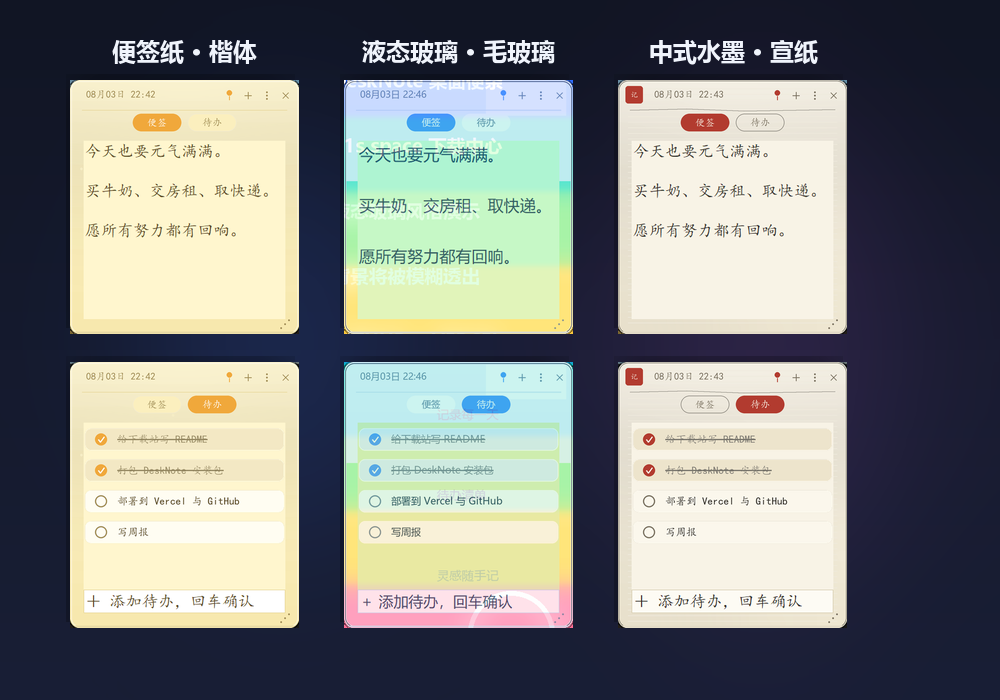
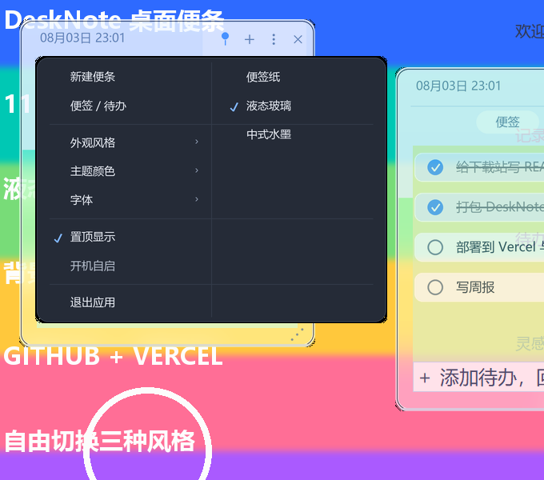

✦ 11s 出品 · 桌面 & 安卓应用
简单、精致、触手可及
精选桌面工具与安卓应用，一键下载安装。全部免费、无广告。
下载中心
安装包均托管于 GitHub Releases，由 Vercel 全球加速分发。
软件
版本
平台
大小
操作
更多软件正在路上，敬请期待 ✨
安装包 SHA-256 校验值
DeskNote-Setup-1.2.0.exe
4eb5f4b382c66229b7b5d9eda5a7efd0774a3e21556f6756c08121951a25a46b
Jitu-Android-1.0.0.apk
4A5477BAF782152BEC0F710587480BABC007D545521FDDA65CFC5A8C5028DFC0
界面预览
真实运行截图：便签纸 / 液态玻璃 / 中式水墨三种风格，同一应用全局切换。


为什么选择 11s 的软件
专注一件事
每个工具只解决一个痛点，没有臃肿功能与弹窗广告。
精致外观
统一的设计语言，圆角、留白、细腻动效，赏心悦目。
隐私安全
数据仅保存在本地，开源代码可审计，无网络上传。
开箱即用
绿色安装包，下一步即完成，全中文界面零门槛。
关于本站
📦 分发方式
源代码托管于 GitHub，页面与安装包通过 Vercel 全球 CDN 分发，下载快速稳定。
🛠 遇到问题？
Windows SmartScreen 提示时，点击「更多信息 → 仍要运行」即可；安装包数字签名正在申请中。
💡 意见反馈
欢迎在 GitHub 提交 Issue 或建议，你的每一条反馈都会让软件更好。